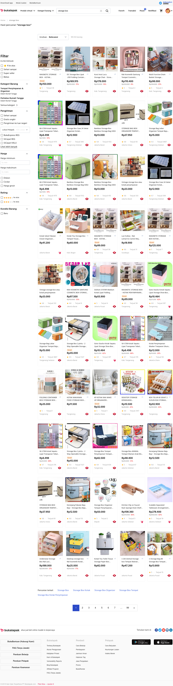

Bukalapak
View siteBukalapak is one of the biggest online marketplace in Indonesia. It provides services to enable everyone to sell and buy products from all over Indonesia. As a Front-end Engineer, I was involved in many projects related to Bukalapak main website. Some of the notable projects are.
- Developed the front-end for many of the earlier features of Bukalapak like shopping cart and transaction
- Restructured stylesheets, javascripts, and HTML templates for better maintenance and performance.
- Developed styleguide and component library for redesign.
- Involved in migrating the front-end code to ES6 and Vue.
- Developed the product search page that uses API instead of interacting directly with back-end. This was one of the first pages that were migrated to use API.
- Involved in migrating from Rails asset pipeline to webpacker for front-end asset processing.
- Developed internal tools, such as api client and component library, that are used by other engineers.
- Developed the infrastructure for microfrontend. This includes a back-end layer for microfrontend application, a library for rendering web pages with microfrontend, and many more.
Bukalapak Product Search
Bukalapak Admin Dashboard

Bukalapak Old Styleguide